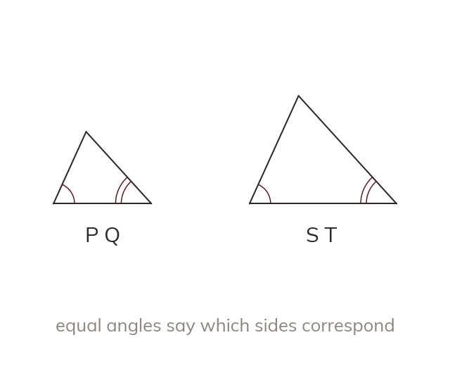

What makes two shapes similar
Similar shapes need both: equal corresponding angles AND sides in the same ratio. Corresponding sides sit opposite equal angles, not in the same place on the page.
Two shapes are similar if their corresponding angles are all equal AND their corresponding sides are all in the same ratio - both conditions are needed together, not just one on its own. Corresponding sides are identified by the equal angles they sit opposite (their position in the shape's structure), not by how they happen to be drawn on the page.